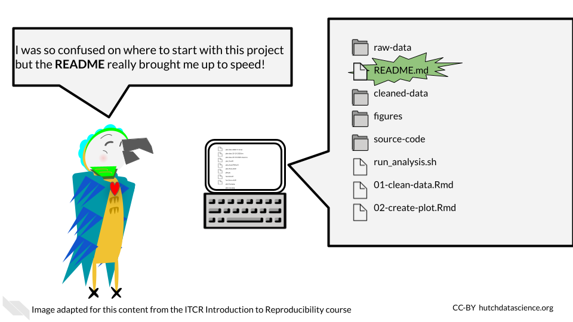

Chapter 7 Reproducible Code

7.1 Reproducibility means we don’t need to reinvent the wheel!
When you realize something that you need done, you should first use Google and look on GitHub and StackOverflow to see if someone else has written something that works really well. Where at all possible, borrow good code and attribute the author – no need to reinvent the wheel. As we said previously, R has a great community of users who are constantly creating new and great code, often in the form of packages that are ready for you to install and use.
This is the beauty of reproducibility, if you or someone else makes great code, it can not only be re-run but it can be repurposed!
7.1.1 Tips for choosing packages to use:
- Does the package have easy to use documentation to help guide you on how to use it properly? If the package has underdeveloped documentation it may be difficult for you or others to understand and use properly.
- Is the code actively being developed or maintained? Packages that are no longer being maintained will likely deprecate more quickly rendering them unusable in the future.
- Is it a package that is commonly recognized by the community? Well recognized packages will be easier for others to comment on and help you with.
7.2 The importance of iterative work
We’ve mentioned previously that reproducibility is iterative work. This way of working refers to code work as much as anything else. You won’t ever write perfect code on the first try, instead aim for each chunk to work one step at a time. Once it is working, take a break (perhaps until the next day), then return to it and look for ways to polish it and make it more efficient.

7.4 Readable
Reproducible code is readable code. In order for other people to use your code, they will need to be able to understand it. Because of that, code being readable is more important than code being innovative or clever.
7.4.1 Well-documented
Reproducible code is well documented code! This includes (but isn’t limited to):
- A README that can get individuals up to speed on the project quickly
- Code and notebooks that have a healthy amount of comments
These bits of documentation are not only helpful for others reading your project but for you! As time passes, future you will forget what you of today was thinking when you wrote this code. Helpful code comments can help jog your memory of what the code is doing and perhaps what the next steps in the project need to be.
7.4.1.1 READMEs
READMEs are a universal signal to people looking at the project that they should READ this file to get a rundown on the project.

READMEs should include:
- A summary of the goals and intentions of the project.
- Usage instructions that explain exactly what commands and packages need to be used to re-run analyses.
- Explanation of what software dependencies are needed for your project.
- A basic summary of what files are there; which are input and output files.
- Any other information that would be relevant to someone trying to understand the project.
Here’s a template README that you can use an example.
- README - A file in a project that has the start up summary information that could get someone acclimated to the project.
7.4.1.2 Code comments
A healthy amount of code comments doesn’t mean that every line needs a comment (though perhaps at sections that need future explanation they might). Helpful code comments don’t just echo what the code is doing but are explanatory. StackOverflow has a great article about rules for writing helpful code comments. we’ll echo the rules here:
Rule 1: Comments should not duplicate the code.
Rule 2: Good comments do not excuse unclear code.
Rule 3: If you can’t write a clear comment, there may be a problem with the code.
Rule 4: Comments should dispel confusion, not cause it.
Rule 5: Explain unidiomatic code in comments.
Rule 6: Provide links to the original source of copied code.
Rule 7: Include links to external references where they will be most helpful.
Rule 8: Add comments when fixing bugs.
Rule 9: Use comments to mark incomplete implementations.
7.4.2 Follows a code style
Code style helps make code readable. Appropriate spacing, punctuation, and grammar are not always essential for getting a message across, but it can certainly b3 dis-tRaCTIng to readers if conventions aren’t followed.
Basic Example:
# Bad: Should use <- and have a variable name that is informative
x = c(1, 4, 5, 10)
# Bad: Irregular spacing is distracting
numbers<- c(1, 4,5,10)
# Good!
numbers <- c(1, 4, 5, 10)Here’s some style guides you can use:
R packages like styler can automatically style code for you.
7.5 Efficient
Reproducible code is efficient code. Efficiency helps reproducibility in that code that takes up less resources and is not redundant can be re-run and debugged more easily.
7.5.1 Doesn’t use up more computational resources than necessary
R is not meant to be a fast language. R code can be computationally costly if it’s written in the wrong way.
You can identify what parts of your R code are the slowest or otherwise computationally costly by using the profvis and bench packages.
One popular example is R loops which can be particularly slow in R. Note that this doesn’t mean you shouldn’t ever use loops or other items in R, just that you should be aware that some items in R are particularly slower than others.
R ‘for loop’ alternatives:
- Using
applyfunctions (an older option that comes with the basic installation of R) - Advanced R discusses alternative strategies
- The across function
- Using the
purrrpackage - A nice summary of these functions
Further reading:
- Hadley Wickham has a great chapter in Advanced R that covers these concepts in more detail.
7.5.2 Is DRY (don’t repeat yourself)
DRY is an acronym for “don’t repeat yourself”. Non-redundant code is more reproducible because it is easier to maintain and to read.
Let’s take a look at an example from this Reproducibility in Cancer Informatics course about what DRY vs non-DRY code might look like:
Non-DRY or WET (write everything twice) code might look like this:
paste('Hello','John', 'welcome to this course')
paste('Hello','Susan', 'welcome to this course')
paste('Hello','Matt', 'welcome to this course')
paste('Hello','Anne', 'welcome to this course')
paste('Hello','Joe', 'welcome to this course')
paste('Hello','Tyson', 'welcome to this course')
paste('Hello','Julia', 'welcome to this course')
paste('Hello','Cathy', 'welcome to this course')Note that if you want to change something in eight of these messages you would have to change all eight lines.
To DRY up this code, we could functionalize it:
GreetStudent <- function(name) {
greeting <- paste('Hello', name, 'welcome to this course')
return(greeting)
}
class_names <- c('John', 'Susan', 'Matt' ,'Anne', 'Joe', 'Tyson', 'Julia', 'Cathy')
lapply(class_names, GreetStudent)Now, if we wanted to edit the greeting pasted, we’d only have to change it once.
- DRY code - Code that doesn’t repeat itself and because of that is more efficient
7.6 Consistent
Consistency is key for reproducibility. Not only do we want code to run consistently, but it will be more understandable to our future selves and to others if it follows a pattern.
7.6.1 Follows conventions
Although there’s always a time to break conventions, often times conventions lend to readability. For example, in R using <- for assignments is less likely to be distracting than using =. This is related to following a style guide. In general we recommend using the tidyverse conventions and style.
However, this advice, like a lot of the advice in this chapter is highly dependent on the context and goals of the project and code being written. There are times that the conventional way to write something might not suit the project because it is inefficient or otherwise clashes with other goals of reproducibility.
7.6.2 Is organized
In the previous chapter, we discussed how projects should be organized in order to be reproducible, but this also applies to code. Sometimes as you have been working on code, you may realize that as it has been developing it doesn’t flow in an organized manner.
Just as with regular writing that is disorganized, code that is disorganized can be hard to follow and hard to bug. For example, if you have hard coded a multiple variables or have loaded multiple packages, it makes sense to group these items together so they are easier to find and fix.
A code outline for an analysis notebook for example might look like:
- Describe the goals
- Load in the libraries and any source code
- Declare any hard coded variables
- Read in the data
- Clean the data
- Make plots and gather statistics
- Summarize results
- Print out the session info we’ll discuss more about this in a future chapter.
7.7 Conclusion
The best way to find out if your code meets these concepts or how it can better become more reproducible is through code review. We will briefly discuss code review in future chapters.
In summary, reproducible code is:
- Readable
- Well-documented
- Follows a code style
- Efficient
- Computationally non wasteful
- DRY
- Consistent
- Follows convention (when appropriate)
- Organized